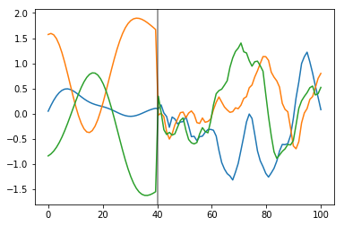

Mauna Loa Example 2: Incorporating atmospheric measurements
This GP example shows how to:
- Fit fully Bayesian GPs with NUTS
- Model inputs which are themselves uncertain (uncertainty in 'x')
- Defining custom mean and covariance functions
- Forecast and backcast
Now we look at how to build a changepoint covariance function, using covariance function primitives available in the PyMC3 library. Finally, we'll put it all together to build an accurate GP model of CO2 emissions that combines ice core data with modern atmospheric measurements.
Re-loading the ice core data
import pymc3 as pm
import pandas as pd
import numpy as np
import theano
import theano.tensor as tt
import matplotlib.pyplot as plt
%matplotlib inline
ice = pd.read_csv(pm.get_data("merged_ice_core_yearly.csv"), header=26)
ice.columns = ["year", "CO2"]
ice["CO2"] = ice["CO2"].astype(np.float)
#### DATA AFTER 1958 is an average of ice core and mauna loa data, so remove it
ice = ice[ice["year"] <= 1958]
print("Number of data points:", len(ice))
Number of data points: 111
fig = plt.figure(figsize=(9,4))
ax = plt.gca()
ax.plot(ice.year.values, ice.CO2.values, '.k');
ax.set_xlabel("Year")
ax.set_ylabel("CO2 (ppm)");
A custom changepoint covariance function
More complex covariance functions can be constructed by composing base covariance functions in several ways. For instance, two of the most commonly used operations are
- The sum of two covariance functions is a covariance function
- The product of two covariance functions is a covariance function
We can also construct a covariance function by scaling a base covariance function (\(k_b\)) by any arbitrary function,
The scaling function can be parameterized by known parameters, or unknown parameters can be inferred.
Heaviside step function
To specifically construct a covariance function that describes a changepoint, we could propose a scaling function \(s(x)\) that specifies the region where the base covariance is active. The simplest option is the step function,
which is parameterized by the changepoint \(x_0\). The covariance function \(s(x; x_0) k_b(x, x') s(x'; x_0)\) is only active in the region \(x \leq x_0\).
The PyMC3 contains the ScaledCov covariance function. As arguments, it takes a base
covariance, a scaling function, and the tuple of the arguments for the base covariance. To construct this in PyMC3, we first define the scaling function:
def step_function(x, x0, greater=True):
if greater:
# s = 1 for x < x_0
return 0.5 * (tt.sgn(x - x0) + 1.0)
else:
return 0.5 * (tt.sgn(x0 - x) + 1.0)
step_function(np.linspace(0, 10, 10), x0=5, greater=True).eval()
array([0., 0., 0., 0., 0., 1., 1., 1., 1., 1.])
step_function(np.linspace(0, 10, 10), x0=5, greater=False).eval()
array([1., 1., 1., 1., 1., 0., 0., 0., 0., 0.])
Then we can define the the following covariance function. We compute it over \(x \in (0, 100)\). The base covariance has a lengthscale of 10, and \(x_0 = 40\). Since we are using a step function, it is "active" for \(x < 40\).
cov = pm.gp.cov.ExpQuad(1, 10)
sc_cov = pm.gp.cov.ScaledCov(1, cov, step_function, (40, False))
x = np.linspace(0, 100, 100)
K = sc_cov(x[:,None]).eval()
m=plt.imshow(K, cmap="magma"); plt.colorbar(m);
But his isn't a changepoint covariance function yet. We can add two of these together. For \(x < 40\), Lets use a base covariance that is a Matern32 with a lengthscale of 5 and an amplitude of 0.25.
cov1 = pm.gp.cov.ExpQuad(1, 10)
sc_cov1 = pm.gp.cov.ScaledCov(1, cov1, step_function, (40, False))
cov2 = 0.25 * pm.gp.cov.Matern32(1, 5)
sc_cov2 = pm.gp.cov.ScaledCov(1, cov2, step_function, (40, True))
sc_cov = sc_cov1 + sc_cov2
# plot over 0 < x < 100
x = np.linspace(0, 100, 100)
K = sc_cov(x[:,None]).eval()
m=plt.imshow(K, cmap="magma"); plt.colorbar(m);
What do samples from the Gaussian process prior with this covariance look like?
prior_samples = np.random.multivariate_normal(np.zeros(100), K, 3).T
plt.plot(x, prior_samples);
plt.axvline(x=40, color="k", alpha=0.5);

Before \(x = 40\), the function is smooth and slowly changing. After \(x = 40\), the samples are less smooth and change quickly.
A gradual change with a sigmoid function
Instead of a sharp cutoff, It is usually more realistic to have a smooth transition. For this we can use the logistic function, shown below:
# a is the slope, b is the location
a = -0.2
b = 40
plt.plot(x, pm.math.invlogit(a*(x - b)).eval(), label="scaling left cov");
a = 0.2
b = 40
plt.plot(x, pm.math.invlogit(a*(x - b)).eval(), label="scaling right cov");
plt.legend();
def logistic(x, a, x0):
# a is the slope, x0 is the location
return pm.math.invlogit(a*(x - x0))
The same covariance function as before, but with a gradual changepoint is shown below.
cov1 = pm.gp.cov.ExpQuad(1, 10)
sc_cov1 = pm.gp.cov.ScaledCov(1, cov1, logistic, (-0.1, 40))
cov2 = 0.25 * pm.gp.cov.Matern32(1, 5)
sc_cov2 = pm.gp.cov.ScaledCov(1, cov2, logistic, (0.1, 40))
sc_cov = sc_cov1 + sc_cov2
# plot over 0 < x < 100
x = np.linspace(0, 100, 100)
K = sc_cov(x[:,None]).eval()
m=plt.imshow(K, cmap="magma"); plt.colorbar(m);
Below, you can see that the transition of the prior functions from one region to the next is more gradual,
prior_samples = np.random.multivariate_normal(np.zeros(100), K, 3).T
plt.plot(x, prior_samples);
plt.axvline(x=40, color="k", alpha=0.5);
Lets try this model out instead of the semiparametric changepoint version.
Changepoint covariance model
The features of this model are:
- One covariance for short term variation across all time points
- The parameter
x0is the location of the industrial revolution. It is given a prior that has most of its support between years 1760 and 1840, centered at 1800. - We can easily use the parameter as the
shiftparameter in the 2nd degreePolynomial(quadratic) covariance, and as the location of the changepoint in the changepoint covariance. - A changepoint covariance that is
ExpQuadprior to the industrial revolution, andExpQuad + Polynomial(degree=2)afterwards. - We use the same scaling and lengthscale parameters for each of the two base covariances in the changepoint covariance.
- Still modeling uncertainty in
xas before
with pm.Model() as model:
η = pm.HalfNormal("η", sd=5)
ℓ = pm.Gamma("ℓ", alpha=2, beta=0.1)
# changepoint occurs near the year 1800, sometime between 1760, 1840
x0 = pm.Normal("x0", mu=18, sd=0.1)
# the change happens gradually
a = pm.HalfNormal("a", sd=2)
# a constant for the
c = pm.HalfNormal("c", sd=3)
# quadratic polynomial scale
ηq = pm.HalfNormal("ηq", sd=5)
cov1 = η**2 * pm.gp.cov.ExpQuad(1, ℓ)
cov2 = η**2 * pm.gp.cov.ExpQuad(1, ℓ) + ηq**2 * pm.gp.cov.Polynomial(1, x0, 2, c)
# construct changepoint cov
sc_cov1 = pm.gp.cov.ScaledCov(1, cov1, logistic, (-a, x0))
sc_cov2 = pm.gp.cov.ScaledCov(1, cov2, logistic, ( a, x0))
cov_c = sc_cov1 + sc_cov2
# short term variation
ηs = pm.HalfNormal("ηs", sd=5)
ℓs = pm.Gamma("ℓs", alpha=2, beta=1)
cov_s = ηs**2 * pm.gp.cov.Matern52(1, ℓs)
gp = pm.gp.Marginal(cov_func=cov_s + cov_c)
# x location uncertainty (sd = 0.01 is a standard deviation of one year)
t_diff = pm.Normal("t_diff", mu=0.0, sd=0.01, shape=len(t))
t_uncert = t_n - t_diff
# white noise variance
σ = pm.HalfNormal("σ", sd=5, testval=1)
y_ = gp.marginal_likelihood("y", X=t_uncert[:,None], y=y_n, noise=σ)
with model:
tr = pm.sample(500, chains=2, cores=1, nuts_kwargs={"target_accept": 0.95})
Auto-assigning NUTS sampler...
Initializing NUTS using jitter+adapt_diag...
Sequential sampling (2 chains in 1 job)
NUTS: [σ, t_diff, ℓs, ηs, ηq, c, a, x0, ℓ, η]
100%|██████████| 1000/1000 [02:17<00:00, 7.29it/s]
100%|██████████| 1000/1000 [02:02<00:00, 8.18it/s]
The acceptance probability does not match the target. It is 0.8988327928717826, but should be close to 0.8. Try to increase the number of tuning steps.
pm.traceplot(tr, varnames=["η", "ηs", "ℓ", "ℓs", "c", "a", "x0", "σ"]);
Predictions
tnew = np.linspace(-100, 2300, 2200)/100
with model:
fnew = gp.conditional("fnew", Xnew=tnew[:,None])
with model:
ppc = pm.sample_ppc(tr, samples=100, vars=[fnew])
100%|██████████| 100/100 [17:02<00:00, 10.23s/it]
samples = y_sd * ppc["fnew"] + y_mu
fig = plt.figure(figsize=(12,5))
ax = plt.gca()
pm.gp.util.plot_gp_dist(ax, samples, tnew, plot_samples=True, palette="Blues")
ax.plot(t/100, y, "k.");
ax.set_xticks(np.arange(0,23));
ax.set_xlim([-1, 23]);
ax.set_ylim([250, 450]);

The predictions for this model look much more realistic. The product of a 2nd degree polynomial with an ExpQuad looks like a good model to forecast with. It allows for
the amount of CO2 to increase in a not-exactly-linear fashion. We can see from the predictions that
- The amount of CO2 could increase at a faster rate
- The amount of CO2 should increase more or less linearly
- It is possible for the CO2 to start to decrease
Incorporating Atmospheric CO2 measurements
Next, we incorporate the CO2 measurements from the Mauna Loa observatory. These data points were taken monthly from atmospheric levels. Unlike the ice core data, there is no uncertainty in these measurements. While modeling both of these data sets together, the value of including the uncertainty in the ice core measurement time will be more apparent.
First let's load in the data, and then plot it alongside the ice core data.
from datetime import datetime as dt
import time
def toYearFraction(date):
date = pd.to_datetime(date)
def sinceEpoch(date): # returns seconds since epoch
return time.mktime(date.timetuple())
s = sinceEpoch
year = date.year
startOfThisYear = dt(year=year, month=1, day=1)
startOfNextYear = dt(year=year+1, month=1, day=1)
yearElapsed = s(date) - s(startOfThisYear)
yearDuration = s(startOfNextYear) - s(startOfThisYear)
fraction = yearElapsed/yearDuration
return date.year + fraction
airdata = pd.read_csv(pm.get_data("monthly_in_situ_co2_mlo.csv"), header=56)
# - replace -99.99 with NaN
airdata.replace(to_replace=-99.99, value=np.nan, inplace=True)
# fix column names
cols = ["year", "month", "--", "--", "CO2", "seasonaly_adjusted", "fit",
"seasonally_adjusted_fit", "CO2_filled", "seasonally_adjusted_filled"]
airdata.columns = cols
cols.remove("--"); cols.remove("--")
airdata = airdata[cols]
# drop rows with nan
airdata.dropna(inplace=True)
# fix time index
airdata["day"] = 15
airdata.index = pd.to_datetime(airdata[["year", "month", "day"]])
airdata["year"] = [toYearFraction(date) for date in airdata.index.values]
cols.remove("month")
airdata = airdata[cols]
air = airdata[["year", "CO2"]]
air.head(5)
| year | CO2 | |
|---|---|---|
| 1958-03-15 | 1958.200000 | 315.69 |
| 1958-04-15 | 1958.284932 | 317.46 |
| 1958-05-15 | 1958.367009 | 317.50 |
| 1958-07-15 | 1958.534132 | 315.86 |
| 1958-08-15 | 1958.619064 | 314.93 |
Like was done in the first notebook, we reserve the data from 2004 onwards as the test set.
sep_idx = air.index.searchsorted(pd.to_datetime("2003-12-15"))
air_test = air.iloc[sep_idx:, :]
air = air.iloc[:sep_idx+1, :]
plt.plot(air.year.values, air.CO2.values, ".b", label="atmospheric CO2");
plt.plot(ice.year.values, ice.CO2.values, ".", color="c", label="ice core CO2");
plt.legend();

If we zoom in on the late 1950's, we can see that the atmospheric data has a seasonal component, while the ice core data does not.
plt.plot(air.year.values, air.CO2.values, ".b", label="atmospheric CO2");
plt.plot(ice.year.values, ice.CO2.values, ".", color="c", label="ice core CO2");
plt.xlim([1949, 1965]);
plt.ylim([305, 325]);
plt.legend();
Since the ice core data isn't measured accurately, it wont be possible to backcast the seasonal component unless we model uncertainty in x.
To model both the data together, we will combine the model we've built up using the ice core data, and combine it with elements from the previous notebook on the Mauna Loa data. From the previous notebook we will additionally include the
- The
Perioidic, seasonal component - The
RatQuadcovariance for short range, annual scale variations
Also, since we are using two different data sets, there should be two different y-direction uncertainties, one for the ice core data, and one for the atmospheric data. Do accomplish this, we make a custom WhiteNoise covariance function that has two σ parameters.
All custom covariance functions need to have the same three methods defined, __init__, diag, and full. full returns the full covariance, given either X or X and a different Xs. diag returns only the diagonal, and __init__ saves the input parameters.
class CustomWhiteNoise(pm.gp.cov.Covariance):
""" Custom White Noise covariance
- sigma1 is applied to the first n1 points in the data
- sigma2 is applied to the next n2 points in the data
The total number of data points n = n1 + n2
"""
def __init__(self, sigma1, sigma2, n1, n2):
super(CustomWhiteNoise, self).__init__(1, None)
self.sigma1 = sigma1
self.sigma2 = sigma2
self.n1 = n1
self.n2 = n2
def diag(self, X):
d1 = tt.alloc(tt.square(self.sigma1), self.n1)
d2 = tt.alloc(tt.square(self.sigma2), self.n2)
return tt.concatenate((d1, d2), 0)
def full(self, X, Xs=None):
if Xs is None:
return tt.diag(self.diag(X))
else:
return tt.alloc(0.0, X.shape[0], Xs.shape[0])
Next we need to organize and combine the two data sets. Remeber that the unit on the x-axis is centuries, not years.
# form dataset, stack t and co2 measurements
t = np.concatenate((ice.year.values, air.year.values), 0)
y = np.concatenate((ice.CO2.values, air.CO2.values), 0)
y_mu, y_sd = np.mean(ice.CO2.values[0:50]), np.std(y)
y_n = (y - y_mu) / y_sd
t_n = t * 0.01
The specification of the model is below. Since the data set is larger, we find the MAP estimate, instead of doing MCMC. We also choose our priors for the hyperparameters more carefully. For the changepoint covariance, we model the post-industrial revolution data with an ExpQuad covariance that has the same longer lengthscale as before the industrial revolution. The idea is that whatever process was at work before, is still there after. But then we add the product of a Polynomial(degree=2) and a Matern52. We fix the lengthscale of the Matern52 to two. Since it has only been about two centuries since the industrial revolution, we force the Polynomial component to decay at that time scale. This forces the uncertainty to rise at this time scale.
with pm.Model() as model:
ηc = pm.Gamma("ηc", alpha=3, beta=2)
ℓc = pm.Gamma("ℓc", alpha=10, beta=1)
# changepoint occurs near the year 1800, sometime between 1760, 1840
x0 = pm.Normal("x0", mu=18, sd=0.1)
# the change happens gradually
a = pm.Gamma("a", alpha=3, beta=1)
# constant offset
c = pm.HalfNormal("c", sd=2)
# quadratic polynomial scale
ηq = pm.HalfNormal("ηq", sd=1)
ℓq = 2.0 # 2 century impact, since we only have 2 C of post IR data
cov1 = ηc**2 * pm.gp.cov.ExpQuad(1, ℓc)
cov2 = ηc**2 * pm.gp.cov.ExpQuad(1, ℓc) + \
ηq**2 * pm.gp.cov.Polynomial(1, x0, 2, c) * pm.gp.cov.Matern52(1, ℓq) # ~2 century impact
# construct changepoint cov
sc_cov1 = pm.gp.cov.ScaledCov(1, cov1, logistic, (-a, x0))
sc_cov2 = pm.gp.cov.ScaledCov(1, cov2, logistic, ( a, x0))
gp_c = pm.gp.Marginal(cov_func=sc_cov1 + sc_cov2)
# short term variation
ηs = pm.HalfNormal("ηs", sd=3)
ℓs = pm.Gamma("ℓs", alpha=5, beta=100)
α = pm.Gamma("α", alpha=4, beta=1)
cov_s = ηs**2 * pm.gp.cov.RatQuad(1, α, ℓs)
gp_s = pm.gp.Marginal(cov_func=cov_s)
# medium term variation
ηm = pm.HalfNormal("ηm", sd=5)
ℓm = pm.Gamma("ℓm", alpha=2, beta=3)
cov_m = ηm**2 * pm.gp.cov.ExpQuad(1, ℓm)
gp_m = pm.gp.Marginal(cov_func=cov_m)
## periodic
ηp = pm.HalfNormal("ηp", sd=2)
ℓp_decay = pm.Gamma("ℓp_decay", alpha=40, beta=0.1)
ℓp_smooth = pm.Normal("ℓp_smooth ", mu=1.0, sd=0.05)
period = 1 * 0.01 # we know the period is annual
cov_p = ηp**2 * pm.gp.cov.Periodic(1, period, ℓp_smooth) \
* pm.gp.cov.ExpQuad(1, ℓp_decay)
gp_p = pm.gp.Marginal(cov_func=cov_p)
gp = gp_c + gp_m + gp_s + gp_p
# - x location uncertainty (sd = 0.01 is a standard deviation of one year)
# - only the first 111 points are the ice core data
# - sd = 0.002 says the point may be the given data +- about half a year
t_mu = t_n[:111]
t_diff = pm.Normal("t_diff", mu=0.0, sd=0.002, shape=len(t_mu))
t_uncert = t_mu - t_diff
t_combined = tt.concatenate((t_uncert, t_n[111:]), 0)
# Noise covariance, using boundary avoiding priors for MAP estimation
σ1 = pm.Gamma("σ1", alpha=3, beta=50)
σ2 = pm.Gamma("σ2", alpha=3, beta=50)
η_noise = pm.HalfNormal("η_noise", sd=1)
ℓ_noise = pm.Gamma("ℓ_noise", alpha=2, beta=200)
cov_noise = η_noise**2 * pm.gp.cov.Matern32(1, ℓ_noise) +\
CustomWhiteNoise(σ1, σ2, 111, 545)
y_ = gp.marginal_likelihood("y", X=t_combined[:,None], y=y_n, noise=cov_noise)
with model:
mp = pm.find_MAP(method="BFGS")
logp = 2,447.7, ||grad|| = 2.2812: 100%|██████████| 398/398 [03:24<00:00, 1.95it/s]
Lets look at the results. First we'll look at the predictions out to the year 2050.
tnew = np.linspace(1700, 2040, 3000) * 0.01
mu, var = gp.predict(tnew[:,None], point=mp, diag=True)
# rescale
mu_s = y_sd * mu + y_mu
sd = np.sqrt(var)*y_sd
plt.figure(figsize=(12,5))
plt.plot(t, y, 'k.', label="observed data");
plt.plot(air_test.year.values, air_test.CO2.values, ".", color="orange", label="test set data");
plt.plot(100*tnew, mu_s, alpha=0.5);
plt.fill_between(100*tnew, mu_s - 2*sd, mu_s + 2*sd, alpha=0.5, label="2σ prediction interval");
plt.axhline(y=400, color="k", alpha=0.7, linestyle=":")
plt.ylabel("CO2 [ppm]")
plt.xlabel("year");
plt.title("Fit and forecast")
plt.legend();
plt.xlim([1700,2040]);
plt.ylim([260, 460]);
Lets zoom in for a closer look at the uncertainty intervals at the area around when the CO2 levels first cross 400 ppm.
plt.figure(figsize=(12,5))
plt.plot(t, y, 'k.');
plt.plot(100*(t_n[:111] - mp["t_diff"]), y[:111], ".y");
plt.plot(air_test.year.values, air_test.CO2.values, ".", color="orange");
plt.plot(100*tnew, mu_s, alpha=0.5);
plt.fill_between(100*tnew, mu_s - 2*sd, mu_s + 2*sd, alpha=0.5);
plt.axhline(y=400, color="k", alpha=0.7, linestyle=":")
plt.ylabel("CO2 [ppm]")
plt.xlabel("year")
plt.title("Prediction at the test data")
plt.xlim([2005,2025]);
plt.ylim([370, 430]);
If you compare this to the first Mauna Loa example notebook, the predictions are much better. The date when the CO2 level first hits 400 is predicted more accurately. This improvement in the bias is due to including the Polynomial * Matern52 term.
We can also look at what the model says about CO2 levels back in time. Since we allowed the x measurements to have uncertainty, we are able to fit the seasonal component back in time. Lets look at the fit of the model
tnew = np.linspace(11, 32, 500) * 0.01
mu, var = gp.predict(tnew[:,None], point=mp, diag=True)
# rescale
mu_s = y_sd * mu + y_mu
sd = np.sqrt(var)*y_sd
plt.figure(figsize=(12,5))
plt.plot(100*(t_n[:111] - mp["t_diff"]), y[:111], "oy", alpha=0.5, label="shifted observations");
plt.plot(t, y, 'k.', label="observed data");
plt.plot(air_test.year.values, air_test.CO2.values, ".", color="orange");
plt.plot(100*tnew, mu_s, alpha=0.5);
plt.fill_between(100*tnew, mu_s - 2*sd, mu_s + 2*sd, alpha=0.5, label="2σ uncertainty");
plt.legend(loc="upper center");
plt.ylabel("CO2 [ppm]")
plt.xlabel("year")
plt.xlim([12, 31]);
plt.xticks(np.arange(12,32));
plt.ylim([272, 283]);
We can see that far back in time, we can backcast even the seasonal behavior. The ~half year of uncertainty in the x locations allows them to be slightly shifted onto the nearest part of the seasonal oscillation for that year. The magnitude of the oscillation is the same as it is now.
tnew = np.linspace(-20, 0, 300) * 0.01
mu, var = gp.predict(tnew[:,None], point=mp, diag=True)
# rescale
mu_s = y_sd * mu + y_mu
sd = np.sqrt(var)*y_sd
plt.figure(figsize=(12,5))
plt.plot(100*tnew, mu_s, alpha=0.5);
plt.fill_between(100*tnew, mu_s - 2*sd, mu_s + 2*sd, alpha=0.5, label="2σ uncertainty");
plt.legend();
plt.ylabel("CO2 [ppm]")
plt.xlabel("year")
plt.xlim([-20, 0]);
plt.ylim([272, 283]);
As we go back before the year zero BCE, the backcasted seasonality remains intact, as one would expect.